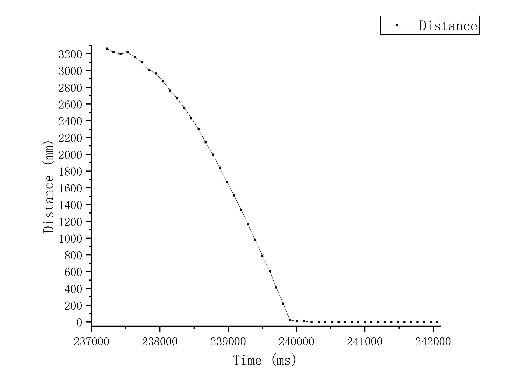

LAB 7 - Kalman Filter
Mar 17th, 2022
Parameter Calculation
Step Response
First I set Duty Cycle to be 80, and let the car run straight towards a wall and recorded the value of TOF. Then I use the data to calculate the speed of the car while also verifying the reliability via linear fitting.



As can be seen from the above figures:
Actual start time: 237528ms
Time to reach maximum speed: 239396ms
Maximum speed: ~ -1.79m/s
Calculate 'd' and 'm' to fill up matrix A and B
Kalman Filter Setup
PID Control